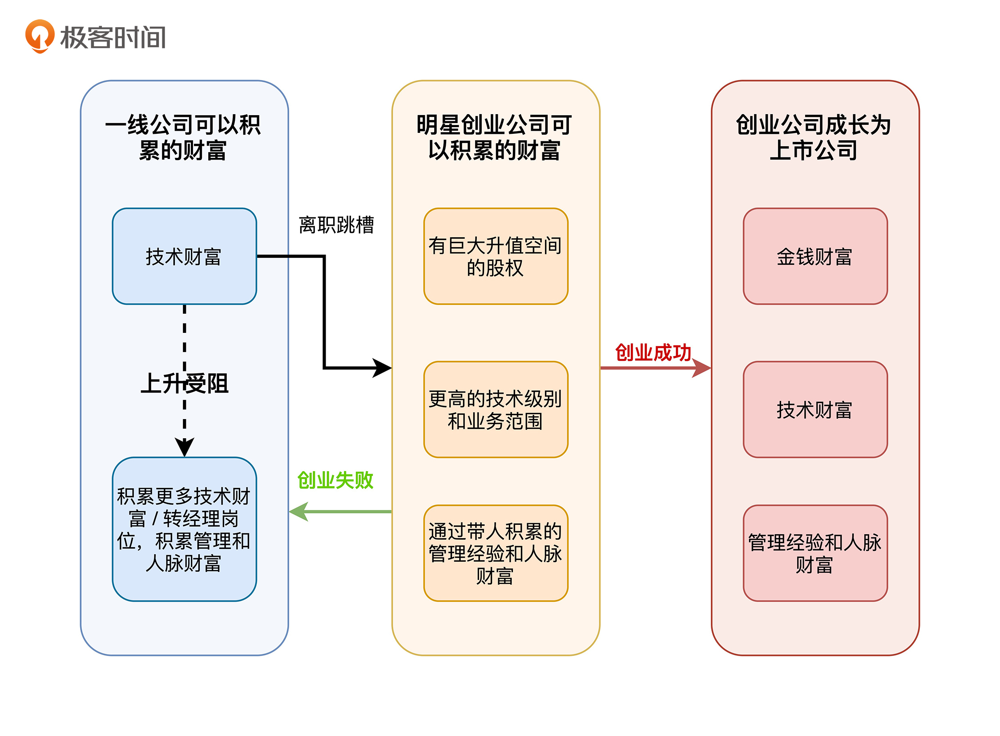

- 00 开篇词 为什么说程序员最适合学财富管理？.md.html
- 01 财富框架：建立属于你自己的财富双塔.md.html
- 02 个人发展：你自己的发展才是最大的财富源泉.md.html
- 03 理财金字塔：如何建立稳固的投资理财结构？.md.html
- 04 实战知识：有哪些收益稳健的经典资产配置组合？.md.html
- 05 支点投资法：主动投资是讲逻辑的！.md.html
- 06 不当韭菜：在财富管理的过程中摆正心态，知己知彼.md.html
- 07 职业方向：如何选择一个有前景的职业方向？.md.html
- 08 职业规划：大公司VS小公司，怎样选择更有前途？.md.html
- 09 期权股权：如何正确处理公司的期权、股权？.md.html
- 10 跳槽涨薪：如何规划一条合理的职业道路？.md.html
- 11 财富拓展：35岁失业？程序员如何拓宽财富渠道？.md.html
- 12 房产投资：如何做出理性的买房决策？.md.html
- 13 实战知识：让我们编程计算下怎么还房贷最合适.md.html
- 14 基金投资：如何让专业人士帮你赚钱？.md.html
- 15 实战知识：如何选出一只优质的基金？.md.html
- 16 股票投资：最适合散户的股票投资方法是什么？.md.html
- 17 投资闭环：如何成为越来越专业的投资者？.md.html
- 18 技术优势：程序员如何用技术超越其他投资者？.md.html
- 19 量化投资：典型的量化投资系统都包含哪些模块？.md.html
- 20 价值投资：永远不过时的中长期投资策略.md.html
- 21 趋势跟踪：怎样跟着趋势一起赚钱？.md.html
- 22 轮动策略：如何踩准市场变换的节奏？.md.html
- 23 对冲思想：这个世界上有稳赚不赔的生意吗？.md.html
- 24 多因子模型：整合不同策略，形成合力的顶层框架.md.html
- 25 机器学习：我们能用机器学习来建立投资模型吗？.md.html
- 26 量化实战：从0到1搭建起一套简单的量化投资系统（上）.md.html
- 27 量化实战：从0到1搭建起一套简单的量化投资系统（下）.md.html
- 番外一 王喆对话李腾：程序员对基金经理的灵魂十问（上）.md.html
- 番外三 有哪些能够持续学习的参考资料和相关网站？.md.html
- 番外二 王喆对话李腾：程序员对基金经理的灵魂十问（下）.md.html
- 番外四 知识总结：这门课的全部思维导图.md.html
- 答疑课堂（一） 财富框架篇、个人发展篇思考题集锦.md.html
- 答疑课堂（二） 投资实战篇、投资进阶篇思考题集锦.md.html
- 结束语 知行合一：财富管理是一生的事情.md.html
- 捐赠
10 跳槽涨薪：如何规划一条合理的职业道路？
你好，我是王喆。今天我们来聊另一个程序员们很关心的话题，跳槽和涨薪。
跟 09讲 聊的股权激励一样，频繁的跳槽也是程序员圈子里一个独有的现象。三年一跳算稳定，一年一跳挺常见，极端点的一年换三个公司。那么，到底是多跳槽好，还是少跳槽好？到底如何跳槽，才能让自己积累起更丰富的职场财富？今天我们就深入地聊一聊程序员的跳槽与涨薪。
为什么跳槽涨薪总比内部涨薪快？
我想讲的第一个问题是，程序员一定需要跳槽吗？你可能会说：如果我就想两耳不闻窗外事，一门心思地在一家公司做下去，到底行不行？我的回答是当然可以。但同时你要清楚，做出这个选择也意味着你要面临薪资倒挂的问题。你即使升职了，内部涨薪的速度往往也赶不上跳槽涨薪的速度。
我曾经面试过一位美国著名IT公司的高级经理，他在这家公司做了9年，从普通的工程师升了四级，成为高级经理。但他自己爆料，当得知自己的薪资居然比不上外面公司的高级工程师的时候，内心是崩溃的，于是毅然决然地开始找工作。
那么问题就来了：为什么在互联网行业，内部涨薪的幅度总没有跳槽涨薪大呢？简要来讲，主要有三个原因：
第一，互联网行业发展过快，行业每年的薪资水平都在快速上涨，而大多数公司的内部涨薪制度跟不上行业的发展速度。
第二，公司内部涨薪受多种因素牵制。比如说，如果单独为你涨薪，难免引起平级同事的心态不平衡，而集体涨薪又会导致薪资支出的大幅上涨，不现实。
第三，需要外部招聘的职位，本身就有稀缺性和紧迫性。能跳槽成功的同学，对于新公司来说肯定是难得的人才，那么自然就容易拿到更高的薪水。
可以说，正是因为这三个原因，如果长期待在同一家公司，基本上总会导致薪资水平与市场脱节。所以，我建议每位程序员都在恰当的时间点去尝试一下外部的机会。
什么时候应该决定离开这家公司？
那么问题来了，到底什么时候是恰当的跳槽时间点呢？或者说，在怎样的情况下，我们应该决定离开当前的公司呢？
如果不谈对公司的忠诚问题，只站在自己的角度考虑，我的答案非常简单明了：当一家公司阻碍了你职场价值的提升，或者说职场财富的积累，那么就可以离开这家公司了。
这么说还是太虚了，那我就举三个例子来说一说，什么情况下你的公司会影响你职场财富的积累。
第一种情况：你加入这家公司的时候，就是把它当跳板的。
我们在08讲 中提到过，如果你的目标是一线大厂，但是因为教育背景或暂时的实力不足，没法直接进大公司，就可以先加入中小公司来“曲线救国”。毫无疑问，在你攒够了经验值之后，当然可以选择离开，到更高的平台上去积累更优质的职场财富。
第二种情况：整个行业出现了不可逆转的问题。
有一些不可抗力因素，是我们程序员无法逆转的，比如2018年共享单车行业集体出问题，2019年P2P行业全部开始关停。遇到这样的行业问题，你应该毫不犹豫地选择离开。不仅要离开，还应该提前感知危机，及时止损。你早离开一步，就早一步避免了职场财富的贬值。
第三种情况：当前公司已经无法给你提供任何技术财富和人脉财富。
如果你在一家公司有超过一年的时间感觉不到任何收获，也应该考虑离开。这里的收获范围很广，包括新技术的使用，期权股权的升值，团队规模的扩大，业务范围的拓展，职级的提升，从技术人员到管理人员的转变，等等。
如果有超过一年的时间，你只是在不断做重复的事情，团队也没有新的发展，那么就应该停下来好好想想了。在发展如此迅速的互联网领域，你不进步就是退步，所以应该立刻开始寻找能让你继续积累职场财富的新东家。
马云曾经把员工离职的原因概括成两点：“钱没给到位”和“心委屈了”。我觉得他说的虽然有道理，但是过于片面了。就算一个岗位钱不是最多的，面临的挑战和委屈也不少，但只要在做的项目、要解决的问题有助于我积累长期的技术优势，有利于我未来的职业生涯发展，我仍然很愿意做下去。
所以，我们还是应该把离职这件事放到整个职业生涯的发展中去考虑，才能做出更有利的决定。这里，再强调一遍我在08讲 中说过的话：我们要优化的目标函数是 n 年职业生涯利益的总和，而不是最近一年的职场收益。
跳槽不是为了逃避问题，而是为了解决问题
上面我分析了什么时候该离职，接下来说说什么情况下不该离职。我坚决反对因为“在这个公司呆不下去了”而离职的做法，这句话本身就充满了逃跑主义的味道。
在我们考虑跳槽的时候，一定要想清楚我们面临的问题到底是因为公司，还是因为自己。
我最近刚收到过一个职场咨询，那位同学是这么说的：
“王老师，我在某一线大厂工作，我们领导最近让我解决推荐系统冷启动的问题，但我实在是做不出来。我想赶紧跑路，免得项目失败。你觉得我是该坚持，还是该找新机会？”
对于这样的问题，我只想说：因为工作难度大而离职，是最差的跳槽理由。
工作中出现了挑战，这正是你打怪升级的好机会。只有做成一个又一个项目，你才能积累越来越多的技术财富和职场资历。何况，我认为对一个技术问题来说，只存在多久做出来的问题，不存在永远做不出来的困境。
换个角度说，如果是为了逃避问题而跳槽，难道你到了新公司就不会面临挑战吗？要知道，新公司是因为缺人才招聘，招你进来就是为了解决问题的。如果你跳槽之后，还是一遇到问题就想跑路，那到什么时候才是个头呢？
类似的离职理由还有很多：“我觉得团队里有几个人针对我，总是跟我对着干”，“我觉得我的技术方案很好，但领导不给我资源”……因为这些理由而离职的同学，首先要做的是转变自己的心态。
要知道，职场永远是一个竞争环境，如果所有人都喜欢你，支持你，那只能说明你自己的价值很低，没有任何竞争的实力。面对问题的时候，抱怨是没用的，一定要思考原因：为什么别人总针对我，不针对其他人？为什么领导给别人资源，不给我资源？
一味逃避对问题的思考，把所有问题都归结于外部环境，这种做法就是在自欺欺人。只有养成“向内思考”的习惯，找到问题的真正源头，才能找到职场成功的钥匙。
我把那些因为逃避问题而跳的槽称为“无效跳槽”。如果你多次无效跳槽，不仅没法积累什么职场财富，而且会让下一家公司的HR认为你是一个没有定力，无法克服困难的人。这就是简历上低于一年的职场经历会给你减分的原因。为了避免“无效跳槽”，你一定要树立这样的观念：跳槽不是为了逃避问题，而是为了解决问题。
要解决的问题，就是如何进行更快的财富积累。所以，我认为跳槽最好的时间点是刚胜利结束了一个大项目，或者刚实现了一个期待已久的职场目标。以胜利者的姿态离开，会让你在职场上的“成功”连续起来。
应该怎么选择你的下一站？
说完什么时候要离开老公司，我们接着来聊聊怎么选新公司。不管你是因为公司发展原因，或行业的大环境离职，还是因为自己新的追求跳槽，都面临着选择“下一站”的问题。
有一句俗语说得好：“人生如棋，走一步看一步是庸者，走一步算三步是常者，走一步定十步是智者。”其实，规划自己的职业生涯也是一样。对于自己未来10年内的总体目标，要有大致的方向；对于5年内的中期目标，要设计好实现的具体计划；对于3年内的小目标，要有切实的行动。
其实，你在加入一家公司的时候，就应该想清楚至少三个问题：
- 我希望在这家公司实现怎样的目标？
- 当我离开这家公司的时候，应该带着什么收获，或者说以什么样的状态离开？
- 当我离开之后，我的下一站应该在哪里？
不同的人有不同的长期目标：有人想成为大公司的总监；有人想走纯技术路线，成为架构师；还有一些人，不希望承受太大的压力，只想在一家小而美的公司做一个资深程序员，或者奋斗五年挣够钱之后就加入国企，享受稳定的职业生涯。
只要符合你的内心，这些都是合理的长期目标。重要的是，一旦确定了你的长期目标，就不要轻易动摇。在瞬息万变的互联网行业，为了让自己的总体目标不发生太大偏移，你就一定要为这个目标规划实现路径，要让自己一步步地朝你的目标靠近。
对于大多数同学来说，我们在选择职业生涯下一站的时候，还是可以完全遵循财富积累的思路，也就是“缺什么财富，就补什么财富”。
我给你举个例子：在硅谷，很多Facebook、Google的L5级（大概工作5-10年）程序员都会选择跳槽，而且是跳到小公司。他们为什么要做出这样的选择呢？
因为L5升L6是一个很大的坎，类似于阿里的P7升P8，需要的不仅是技术实力，还要靠一些运气和业务发展的机遇。这个时候，这些资深程序员们选择加入一些知名的创业公司，就是因为在大厂积累技术财富的收益已经没那么大了，不如去明星小厂带带人。
这样选择，不仅可以积累管理经验和人脉资源，还能拿到更多的股权，搏一把财富自由的机会。即使业务发展没赶上自己的预期，他们凭着多年积累的技术财富，再退回大厂也不是难事。所以，这是一笔“收益大，风险小”的投资。

再举一个“缺啥补啥”的例子：如果你不是一个事业心非常强的人，就是想在一线城市好好奋斗五年，攒够钱就去二三线城市找一份稳定还不太忙的工作。那么这五年里，哪家给的钱更多，你就应该去哪家，而不是纠结于技术级别高不高，工作忙不忙，公司大不大。
总之，在进行职业规划时，更多是要结合你自己的需求，而不是试图寻找一个标准答案。正是因为有太多的人用这种“学生思维”来思考职业规划的问题，才会导致现在“干一行，卷一行”的情况。只有结合你自己的长期规划，以及自己的性格和理想来选择下一站，才会做出最适合你的决定。
要加入新公司了，如何谈offer？
这一讲结束前，我们再聊一个实用的话题，就是如何谈offer。对于这个问题，你掌握下面三个关键点就可以了：
第一，永远不要离职后再去找工作。否则，在谈offer的时候，很容易会被新东家的HR压薪资和职级，在遇到挫折的时候，你的求职心态也更容易崩溃。
第二，如果你心目中有一家目标公司，那么最好先面试两到三家非首选的公司，拿到保底offer或竞争offer之后，再去面目标公司。这样做，一是可以让你逐渐进入面试的最佳状态，二是可以防止被目标公司的HR压职级和薪资。
第三，不要被offer的总价迷惑。你需要好好捋一遍offer薪酬相关的细节，搞清楚哪些是一定能拿到的基本薪酬，哪些是奖金甚至加班费。在总价一样的情况下，当然选基本薪酬给得多的公司，这样才能更好地保障你的收入水平。
做到上面三点之后，你大可与目标公司的HR坦诚相待，谈谈未来发展，谈谈你为什么想加入这家公司，让对方也感受到你的诚意。要相信，“情投意合”的关系才是稳定的。如果在谈offer的过程中，你已经有了非常大的不适感，那么相信你的直觉，尽早拒绝这家公司就好。
小结
这一讲，我们聊了程序员非常关心的话题：跳槽和涨薪。只有把支撑我们做出跳槽决定的底层逻辑想清楚，才能更快地提升人生价值，积累职场财富。那接下来我就总结一下这一讲的重点，你一定要再熟悉一遍：
- 导致跳槽涨薪比内部涨薪快的原因主要有三个：互联网行业发展过快；内部涨薪受多种因素牵制；外部招聘的职位更有稀缺性。
- 当一家公司阻碍你积累职场财富的时候，就可以离开了。主要有三种情况：第一，这家公司本来就是你职业道路上的一个跳板；第二，公司所在的行业出现了不可逆转的问题；第三，当前的公司已经无法给你提供任何技术财富和人脉财富了。
- 一定要牢记，跳槽不是为了逃避问题，而是为了解决问题，要避免“无效跳槽”。
- 在选择下一站的时候，一定要结合你的十年职业规划，做出适合你自己的决定。
- 三个谈offer时的关键点：不要先离职再找工作；先拿竞争offer；关注offer薪酬相关的细节。
思考题
你一定听过“精致的利己主义者”这个词。其实严格地说，我们今天讲的内容就很“利己主义”，因为我们做的决定全是从积累自身财富的角度出发的。那么在当下，你还认同“对公司忠诚，对培养自己的领导感恩”这样的概念吗？为什么？
欢迎你在留言区与我交流讨论，我们下一讲见。
© 2019 - 2023 Liangliang Lee. Powered by gin and hexo-theme-book.